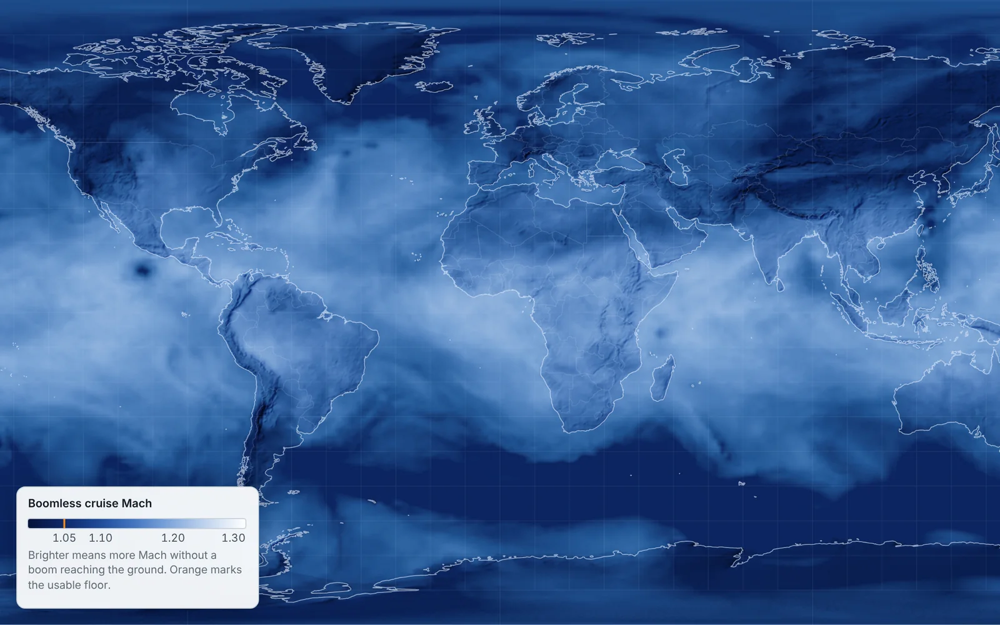

Mach Corridor
An open, global forecast of where a supersonic jet can fly without its boom reaching the ground, updated four times a day.

What the forecast shows
- Altitude is the lever: at FL550 a corridor is usable on 93 % of balloon soundings, at FL350 on 38 % (margin 0.03).
- Season and daily weather each drive about half of the variation (48 % and 51 %); time of day barely matters (under 1 %).
- Forecast skill buys speed: shaving 0.02 off the margin without a better forecast multiplies booming flights 37 times.
The two-model forecast stays under the 0.010 target on the unsafe side for 24 hours
Error of the boomless Mach number against radiosondes, Mach · Oct 2025 – Sep 2026Source: Mach Corridor validation, 3,500 IGRA2 launches at 12 stations (study/results/validation_ifs_mean.json)What a forecast is worth in a year of past weather
| Policy | Minutes saved vs ban | Flights with a boom on land |
|---|---|---|
| Perfect knowledge of the atmosphere | 36.4 | 0 % |
| Forecast with ensemble margin (held out) | 26.1–29.1 | 0.4–0.5 % (any boom) |
| Same, margin raised for route choice (live today) | about 0.7 less | 0.28 % over 0.11 psf (95 %: 0.47 %) |
| Fixed Mach 1.05, no weather | 18.9 | boom on 1.1 % of the distance |
Rocket booms: the model against measured booms
| Measurement | Measured, psf | Model, psf |
|---|---|---|
| Falcon Heavy side boosters, LZ-1/2, at LC-40 (8.9 km) | 1.59–1.71 | 1.82 |
| Falcon Heavy side boosters, LZ-1/2, at LC-39A (15.1 km) | 1.40–1.44 | 1.26 |
| Super Heavy booster return, Flight 5, Port Isabel | 7.1 at 10.5 km; about 10 | 8.6 |
Money and costs
Estimate| Scenario | Jet fuel | Break-even vs 787-9 | Reading |
|---|---|---|---|
| Low | $0.71/kg (2025) | $1,296/h | Business travellers with a high time value |
| Base | $1.20/kg (2026 average) | $1,835/h | Top executives and urgent trips |
| High | $1.50/kg (latest) | $2,164/h | A niche market |
How I built it
The problem A ban since 1973, and a way around it that depends on the weather.
Since 1973 the United States has banned civil supersonic flight over land because of the sonic boom. In July 2026 the FAA proposed replacing the ban with a noise limit of 0.11 psf at the ground. There are two ways to meet it. One is a new, quieter airframe such as NASA's X-59. The other needs no new airplane: fly just slow enough that the air below bends the boom back up before it reaches the ground. That is called Mach cutoff, and Boom's XB-1 showed it works in January 2025. The catch is that the speed that works depends on the temperature and wind of the day, the direction of flight and the terrain below. I wanted to know where and when it works, how fast, and how much a forecast of it would be worth.
The data Two free global forecasts, every 6 hours, every point and direction.
Every six hours the site downloads the latest NOAA GFS forecast and the ECMWF open-data forecast, both free, and computes the boomless Mach number at every 1-degree point, seven flight levels and 36 directions. The answer is the mean of the two models; where either model says no corridor, the map shows none. The NOAA GEFS ensemble of 31 forecasts sets the safety margin point by point. Terrain comes from GFS and a 600 m elevation model, coastlines from Natural Earth, and the satellite map styles from NASA GIBS.
How I checked it 3,500 weather balloons and a year of past weather.
A forecast is only useful if you know how wrong it is. I compared the predicted boomless Mach with what 3,500 weather balloons measured at 12 stations in the US, Alaska and Europe over a full year. I then replayed a year of past weather to see how many minutes corridors save and how often a boom would have slipped through, and set the margins so that fewer than 0.5 % of flights exceed 0.11 psf. The loudness models were checked against NASA's FaINT flight tests and Concorde measurements. The ray tracer is tested against exact solutions every time the code changes, and a browser test plus an accessibility audit run before every deploy.
What the AI did Claude wrote most of the code; I set the questions and made the calls.
I worked with Claude, an AI model by Anthropic. It wrote most of the code and ran the studies, while I set the questions, read the results, made the decisions and contacted NASA and Boom for flight data. Separate AI reviewers acted as a red team, one expert at a time, and found real problems I then fixed. Every number on this page comes from the repository, where the method, the code and the change log are public.
Beyond airliners Rocket booms, and a page for every airline route.
The same ray tracer now forecasts rocket booms. A returning booster falls nose-down at two to four times the speed of sound, so its boom lands on the towns around the landing zone. The site traces those rays through the forecast atmosphere for each upcoming launch at Cape Canaveral, Vandenberg and Starbase, and calibrates the loudness against booms measured for the FAA and by Brigham Young University. It also publishes a page per airline route that says whether that route could fly boomless today.
What failed Five mistakes found and fixed, and what is still open.
Plenty. The first humid-air sound speed was slightly wrong and gave corridors up to 0.001 Mach too fast in hot, humid air (fixed in model 2.10). Picking the fastest of several routes quietly raised the chance of a boom from 0.43 % to 0.59 %, so the margin went up. An early claim that a 1 km height buffer cost only one minute was withdrawn once the loudness model showed an airliner needs about 1.25 km. Hudson Bay was treated as open sea until model 2.12. The original error target of 0.010 is not met in plain RMS terms by any single model, even at analysis time; the two-model mean meets it only on the unsafe side, and that choice is still open. Rocket loudness is good to about a factor of two, and focus booms are not modelled yet.
Sources and licences
7 All open data; commercial use allowed except where noted.
| Source | Used for | Licence | Commercial use |
|---|---|---|---|
| NOAA GFS and GEFS (AWS Open Data) | Forecast atmosphere, ensemble margin | US Government public domain | Yes |
| ECMWF IFS open data | Second model | CC BY 4.0 | Yes, with attribution |
| NOAA IGRA2 radiosondes | Validation | Public domain | Yes |
| NASA GIBS (VIIRS, Blue Marble, Black Marble) | Satellite map styles | NASA open data, acknowledgement | Yes |
| Natural Earth | Coastlines and borders | Public domain | Yes |
| AWS Terrain Tiles (SRTM, GMTED2010, ETOPO1) | Terrain floor | Public domain sources, attribution | Yes |
| Launch Library 2, The Space Devs | Upcoming launches | Free API under its own terms | Check its terms |
Forecast data are updated every 6 hours; validation covers Oct 2025 – Sep 2026. Method, code and model change log: github.com/FernandoVazq/mach-corridor.
Research project by Fernando J. Vázquez. Not for flight planning.